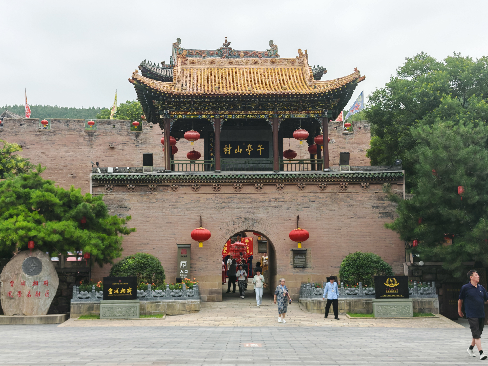
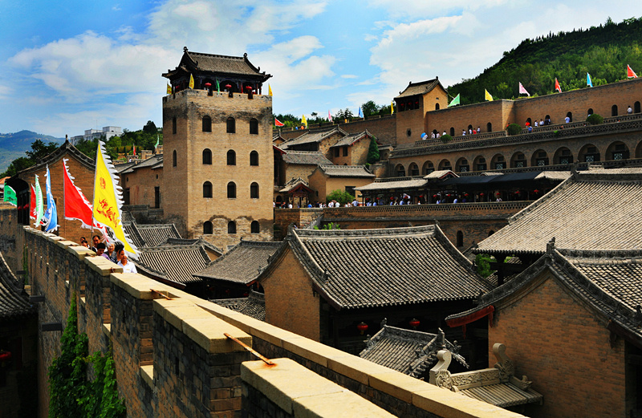
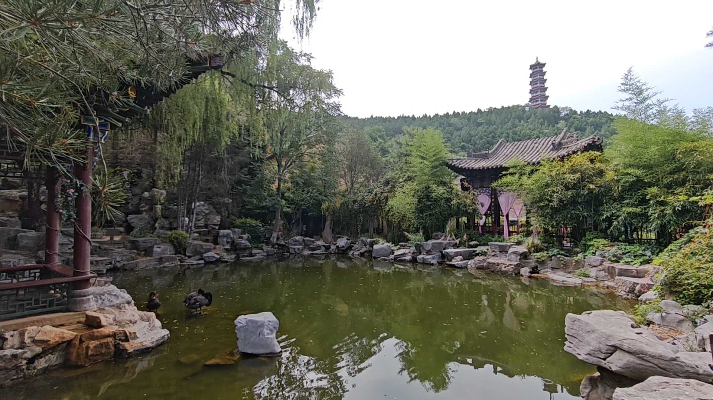
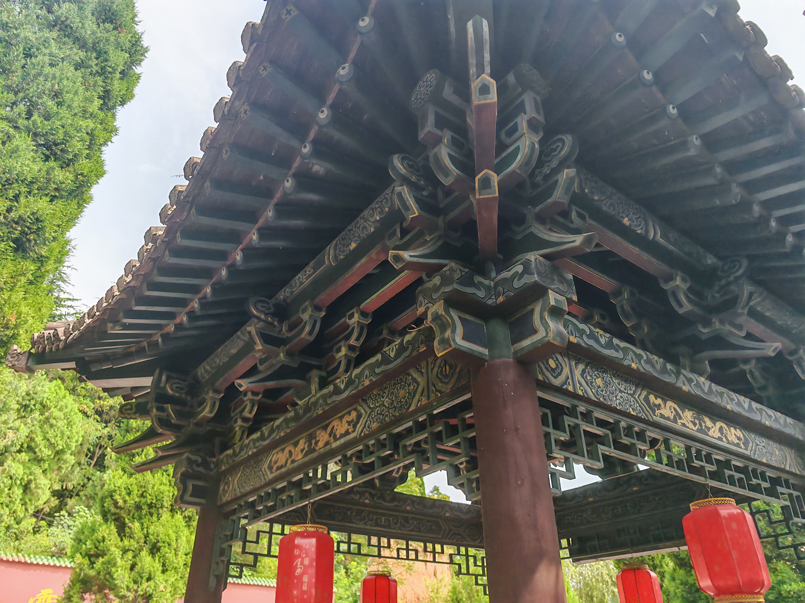

山西晋城 · 皇城相府 社会实践纪实
皇城相府，位于山西省晋城市阳城县北留镇，是清代名臣陈廷敬的故居， 也是一座集官宅、民居、防御于一体的明清城堡式建筑群。
二零二五年盛夏，我们一行六人走进这座历经三百余年风雨的古建筑群， 以"古韵新生"为主题，探寻传统建筑的文化密码，思考文化遗产在当代的活化路径。
从御书楼的皇家气度，到内城的层楼叠院；从石雕砖雕的精湛工艺， 到地方人文表演的生动传承——我们用镜头记录，用脚步丈量， 试图在古老的砖石之间，找到连接过去与未来的线索。
轻触红点，探寻建筑背后的故事

"午亭"为陈廷敬晚号。以帝王的笔墨为一个臣子的故乡题名，并悬挂于正门之上，在清代历史上极为罕见，是皇权恩宠的最高象征。
在中国古代建筑等级中，黄琉璃瓦通常为皇家专属。皇城相府御书楼能覆此瓦，源于康熙帝的特批，彰显了陈氏家族鼎盛时期的政治地位。
厚重的青砖门洞不仅是物理的防御界限，也是穿越历史的通道。伴随着实景演出，数百年前相府车马喧嚣的鲜活日常在此刻重叠。
▲ 皇城相府主入口 · 御书楼与城门
河山楼 · 古代军事防御工程透视

皇城相府最高建筑，相府之巅，拥有俯瞰全局的绝对视野。
墙体极厚，无钢筋混凝土，历经明末战火与三百年风雨仍巍然不动。
底层设有水井、石碾、石磨，并连通暗道，可供数百族人长期固守避难。
高大城墙与河山楼相互呼应，形成立体的交叉火力与巡逻网络。
◆ 悬停数据点查看防御功能详情

「亭者，停也，人所停集也。」
穿过高墙与重门，相府深处藏着一片截然不同的天地。这座没有威仪、没有雄壮的小亭与园林，是陈氏族人卸下朝堂重任后的休憩之所。三百年前的某个午后，陈廷敬或许也曾在此小坐，看庭院花开花落，望天际云卷云舒。
匠心入微：木结构解剖图鉴
中国传统建筑的精髓在于不用一钉一铆。请移动鼠标探索皇城相府屋檐下的结构奥秘。

屋檐边缘向外挑出的木条，配合末端的滴水瓦，使屋顶线条呈现出优美的起翘弧度，同时利于排雨水。
柱子之间的横向联系构件。隐约可见的彩画（如缠枝纹、龙纹）不仅保护木材防腐，更是古代匠人对审美追求的极致体现。
承重与装饰的结合体。层层出挑，将屋顶的巨大重量巧妙地传递到立柱之上，同时展现出清代官式建筑的等级威仪。
请将视频文件放入 video/ 文件夹
并替换此处的 <video> 标签
在皇城相府的庭院中，我们有幸观赏了一场地方人文表演。 演员们身着清代服饰，以传统仪礼再现了陈氏家族的日常生活场景。
鼓乐声中，历史仿佛穿越时空而来——绵延数百年的文化记忆， 在青砖灰瓦之间重新焕发生机。这不仅是表演，更是对传统文化 的一种活态传承，让"古韵"在当代获得了"新生"。
拍摄时间：2025年夏
地点：皇城相府 · 内城庭院
一砖一瓦，一榫一卯，皆是匠心
斗拱是中国古建筑最具代表性的结构构件，位于柱顶与屋梁之间， 通过层层出挑将屋面重量传递至立柱。皇城相府的斗拱采用典型的 清代官式做法，雕饰繁复精美，兼具结构与装饰的双重功能， 体现了"如鸟斯革，如翚斯飞"的建筑意境。
影壁，又称照壁、萧墙，立于大门内侧或外侧，起屏障视线、 聚气藏风之用。皇城相府的影壁以砖雕为主，常见麒麟、仙鹤等 瑞兽图案，雕刻刀法细腻，寓意吉祥。
门楼是府邸建筑群的门面所在，皇城相府的门楼高大宏伟， 檐角飞翘，门楣上方悬有匾额。门楼的高低、体量直接反映了 主人的官阶地位，是封建社会等级制度在建筑上的直观体现。
檐下彩画是清代官式建筑的重要特征。皇城相府的彩画以旋子彩画为主， 青绿冷色调为底，点缀金色线条，历经数百年风雨仍隐约可见当年的 华彩气象。
— 张同学站在这座三百年历史的院落中，我第一次真切感受到 古建筑不是冰冷的砖石，而是承载着温度与记忆的生命体。
— 李同学拍摄每一处雕刻细节时我都在想，当年的工匠是以怎样的 心境完成这些作品？他们的名字或许已湮没，但手艺留了下来。
— 王同学"古韵新生"不仅仅是主题，更是我们此行的答案—— 文化遗产的生命力，在于每一代人的重新发现与诠释。
谨此感谢皇城相府管理处对本次实践活动的大力支持